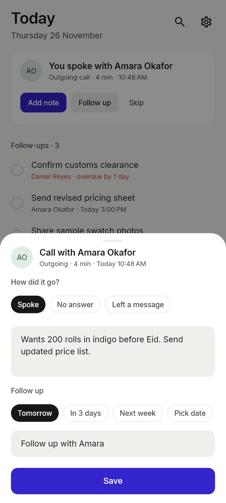

Android app · No account · Works offline
Remember every conversation.
Follow up on time.
PocketCRM turns your phone's calls and messages into a history for each person. Add a note in seconds after a call or a visit, set the next step, and it comes back when it is due.
Installs from an APK file. Everything stays on your phone.


How it works
-
It logs itself
Calls and SMS with the people you have saved appear in their history. You enter nothing.
-
Note it in seconds
When a call ends, PocketCRM asks how it went. Type or dictate a line. Visits, payments and files go in the same sheet.
-
Set the next step
Tomorrow, in three days, next week, or a date. One tap, on every entry.
-
It comes back on time
Today lists what is due, who you have not spoken to for too long, and what is going out.
For work, and for everyone else
If you sell from your phone
- A note after every call and every visit
- Follow-ups that remind you at the right time
- Who owes you, and a reminder in two taps
- One message to a whole list, with each name and amount filled in
If you want to keep up with people
- See when you last spoke to someone
- Choose how often you want to be in touch
- Remember what was said last time
- Birthdays a week ahead
It cannot connect to the internet
No account, no server, no analytics. The app does not hold Android's internet permission, so your calls, messages and notes have nowhere to go. Backups are files you keep, protected with a passphrase if you want one.
Install in a minute
-
Download the APK
Open it from your notifications or your Files app.
-
Allow the install
Android asks once to allow installs from your browser.
-
Finish setup
PocketCRM walks you through contacts, calls and messages, and the settings scheduled sending needs.
Why it is not on Google Play
Google Play only lets an app read call and message history if it replaces your phone or SMS app. PocketCRM works beside the ones you already use, so it is published here instead.
Android only. Every release is on GitHub.